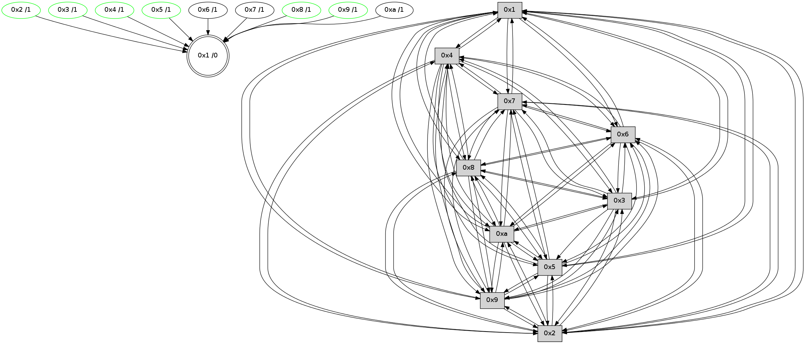

>> << IDX [start] -100 -25 -5 +0 +5 +25 +100 [485.129131079]
 Previous packets
----------------------------------------------------------------------
480.400339 beacon01(faad) #0 coord=01,02,03,04,05,06,07,0a,09,08 cycle=688.0ms assoc
-- color-indic=0 64 68 6e
480.410322 beacon02(faad) #0 coord=01,02,03,04,05,06,07,0a,09,08 cycle=688.0ms assoc 64 fb 5f
480.420320 beacon03(faad) #0 coord=01,02,03,04,05,06,07,0a,09,08 cycle=688.0ms assoc 64 81 12
480.430322 beacon04(faad) #0 coord=01,02,03,04,05,06,07,0a,09,08 cycle=688.0ms assoc 64 f6 f8
480.440322 beacon05(faad) #0 coord=01,02,03,04,05,06,07,0a,09,08 cycle=688.0ms assoc 64 8c b5
480.450322 beacon06(faad) #0 coord=01,02,03,04,05,06,07,0a,09,08 cycle=688.0ms assoc 64 02 62
480.460321 beacon07(faad) #0 coord=01,02,03,04,05,06,07,0a,09,08 cycle=688.0ms assoc 64 78 2f
480.470326 beacon0a(faad) #0 coord=01,02,03,04,05,06,07,0a,09,08 cycle=688.0ms assoc 64 09 24
480.480327 beacon09(faad) #0 coord=01,02,03,04,05,06,07,0a,09,08 cycle=688.0ms assoc 64 87 f3
480.490327 beacon08(faad) #0 coord=01,02,03,04,05,06,07,0a,09,08 cycle=688.0ms assoc 64 fd be
480.501820 [Hello(3): seq=310 sym=1,7,6,2,4,8,9,10,5 sysInfo= stat=1:0,0,5,0/7:4,0,2,0/6:0,0,3,0/2:4,0,2,1/4:9,0,1,0/8:2,0,3,0/9:0,0,2,0/10:10,0,2,0/5:8,0,4,1]
480.504839 [Hello(2): seq=307 sym=4,5,7,6,3,9,8,10,1 sysInfo= stat=4:10,0,2,0/5:8,0,3,2/7:10,0,3,0/6:0,0,3,0/3:4,0,3,1/9:13,0,2,0/8:3,0,4,0/10:7,0,2,0/1:2,0,5,0]
480.508033 [Hello(9): seq=253 sym=5,2,3,4,7,6,8,10,1 sysInfo= stat=5:6,0,2,2/2:1,0,3,1/3:10,0,3,2/4:10,0,1,1/7:2,0,4,0/6:12,0,4,0/8:10,0,3,1/10:4,0,1,0/1:14,0,4,0]
480.511499 [Hello(4): seq=310 sym=5,7,6,2,3,9,8,10,1 sysInfo= stat=5:13,0,4,2/7:14,0,3,0/6:4,0,3,0/2:3,0,1,1/3:6,0,4,2/9:2,0,2,1/8:11,0,4,1/10:10,0,1,0/1:4,0,6,0]
480.514226 [Hello(5): seq=310 sym=7,6,4,3,1,9,8,10,2 sysInfo= stat=7:11,0,2,0/6:0,0,4,0/4:3,0,0,0/3:7,0,1,1/1:5,0,5,0/9:4,0,2,0/8:8,0,3,0/10:15,0,0,0/2:4,0,0,0]
480.521843 [Hello(8): seq=253 sym=5,2,3,4,7,6,9,10,1 sysInfo= stat=5:5,0,3,1/2:15,0,2,1/3:12,0,2,2/4:5,0,1,0/7:15,0,3,0/6:7,0,4,0/9:6,0,2,0/10:2,0,1,0/1:13,0,6,0]
480.525560 [Hello(10): seq=242 sym=6,3,2,8,9,5,7,4,1 sysInfo= stat=6:6,0,4,0/3:0,0,3,2/2:11,0,2,2/8:8,0,5,1/9:1,0,1,1/5:7,0,4,2/7:12,0,3,0/4:3,0,1,1/1:8,0,5,0]
----------------------------------------------------------------------
481.188472 beacon01(faad) #0 coord=01,02,03,04,05,06,07,0a,09,08 cycle=688.0ms assoc
-- color-indic=0 64 5c 76
481.198454 beacon02(faad) #0 coord=01,02,03,04,05,06,07,0a,09,08 cycle=688.0ms assoc 64 cf 47
481.208454 beacon03(faad) #0 coord=01,02,03,04,05,06,07,0a,09,08 cycle=688.0ms assoc 64 b5 0a
481.218454 beacon04(faad) #0 coord=01,02,03,04,05,06,07,0a,09,08 cycle=688.0ms assoc 64 c2 e0
481.228455 beacon05(faad) #0 coord=01,02,03,04,05,06,07,0a,09,08 cycle=688.0ms assoc 64 b8 ad
481.238455 beacon06(faad) #0 coord=01,02,03,04,05,06,07,0a,09,08 cycle=688.0ms assoc 64 36 7a
481.248457 beacon07(faad) #0 coord=01,02,03,04,05,06,07,0a,09,08 cycle=688.0ms assoc 64 4c 37
481.258460 beacon0a(faad) #0 coord=01,02,03,04,05,06,07,0a,09,08 cycle=688.0ms assoc 64 3d 3c
481.268460 beacon09(faad) #0 coord=01,02,03,04,05,06,07,0a,09,08 cycle=688.0ms assoc 64 b3 eb
481.278462 beacon08(faad) #0 coord=01,02,03,04,05,06,07,0a,09,08 cycle=688.0ms assoc 64 c9 a6
481.290277 [Hello(1): seq=219 sym=4,2,9,5,10,3,8,6,7 sysInfo= stat=4:10,0,3,1/2:5,0,4,2/9:4,0,4,1/5:15,0,4,2/10:4,0,3,0/3:8,0,5,2/8:0,0,6,1/6:7,0,5,0/7:0,0,4,0]
481.294552 [Hello(6): seq=310 sym=2,3,5,4,7,9,8,10,1 sysInfo= stat=2:13,0,4,1/3:13,0,3,1/5:3,0,3,1/4:0,0,2,1/7:14,0,2,0/9:0,0,3,1/8:12,0,3,1/10:9,0,3,0/1:4,0,3,0]
481.300132 [Hello(7): seq=310 sym=2,3,5,6,4,8,9,10,1 sysInfo= stat=2:14,0,3,2/3:9,0,4,2/5:11,0,4,2/6:13,0,4,0/4:7,0,1,1/8:14,0,3,1/9:13,0,2,1/10:9,0,3,0/1:1,0,1,0]
----------------------------------------------------------------------
481.976604 beacon01(faad) #0 coord=01,02,03,04,05,06,07,0a,09,08 cycle=688.0ms assoc
-- color-indic=0 64 e0 73
481.986587 beacon02(faad) #0 coord=01,02,03,04,05,06,07,0a,09,08 cycle=688.0ms assoc 64 73 42
481.996585 beacon03(faad) #0 coord=01,02,03,04,05,06,07,0a,09,08 cycle=688.0ms assoc 64 09 0f
482.006588 beacon04(faad) #0 coord=01,02,03,04,05,06,07,0a,09,08 cycle=688.0ms assoc 64 7e e5
482.016586 beacon05(faad) #0 coord=01,02,03,04,05,06,07,0a,09,08 cycle=688.0ms assoc 64 04 a8
482.026587 beacon06(faad) #0 coord=01,02,03,04,05,06,07,0a,09,08 cycle=688.0ms assoc 64 8a 7f
482.036588 beacon07(faad) #0 coord=01,02,03,04,05,06,07,0a,09,08 cycle=688.0ms assoc 64 f0 32
482.046592 beacon0a(faad) #0 coord=01,02,03,04,05,06,07,0a,09,08 cycle=688.0ms assoc 64 81 39
482.056593 beacon09(faad) #0 coord=01,02,03,04,05,06,07,0a,09,08 cycle=688.0ms assoc 64 0f ee
482.066594 beacon08(faad) #0 coord=01,02,03,04,05,06,07,0a,09,08 cycle=688.0ms assoc 64 75 a3
482.078094 [Hello(9): seq=254 sym=5,2,3,4,7,6,8,10,1 sysInfo= stat=5:7,0,2,2/2:1,0,3,1/3:10,0,3,2/4:11,0,1,1/7:3,0,4,0/6:13,0,4,0/8:11,0,3,1/10:5,0,1,0/1:15,0,4,0]
482.081388 [Hello(4): seq=311 sym=5,7,6,2,3,9,8,10,1 sysInfo= stat=5:14,0,4,2/7:15,0,3,0/6:5,0,3,0/2:3,0,1,1/3:6,0,4,2/9:2,0,2,1/8:12,0,4,1/10:11,0,1,0/1:5,0,6,0]
482.083971 [Hello(3): seq=311 sym=1,7,6,2,4,8,9,10,5 sysInfo= stat=1:1,0,5,0/7:5,0,2,0/6:1,0,3,0/2:5,0,2,1/4:10,0,1,0/8:3,0,3,0/9:1,0,2,0/10:11,0,2,0/5:9,0,4,1]
482.087031 [Hello(2): seq=308 sym=4,5,7,6,3,9,8,10,1 sysInfo= stat=4:11,0,2,0/5:9,0,3,2/7:11,0,3,0/6:1,0,3,0/3:4,0,3,1/9:14,0,2,0/8:4,0,4,0/10:8,0,2,0/1:3,0,5,0]
482.090025 [STC(1) #0.7 to-color d=0]
482.093556 [Hello(5): seq=311 sym=7,6,4,1,9,8,10,2 sym= sysInfo= stat=]
482.096412 [Hello(10): seq=243 sym=6,3,2,8,9,5,7,4,1 sysInfo= stat=6:7,0,4,0/3:0,0,3,2/2:11,0,2,2/8:8,0,5,1/9:1,0,1,1/5:7,0,4,2/7:13,0,3,0/4:3,0,1,1/1:9,0,5,0]
----------------------------------------------------------------------
482.764734 beacon01(faad) #0 coord=01,02,03,04,05,06,07,0a,09,08 cycle=688.0ms assoc
-- color-indic=0 64 24 7d
482.774717 beacon02(faad) #0 coord=01,02,03,04,05,06,07,0a,09,08 cycle=688.0ms assoc 64 b7 4c
482.784717 beacon03(faad) #0 coord=01,02,03,04,05,06,07,0a,09,08 cycle=688.0ms assoc 64 cd 01
482.794717 beacon04(faad) #0 coord=01,02,03,04,05,06,07,0a,09,08 cycle=688.0ms assoc 64 ba eb
482.804718 beacon05(faad) #0 coord=01,02,03,04,05,06,07,0a,09,08 cycle=688.0ms assoc 64 c0 a6
482.814717 beacon06(faad) #0 coord=01,02,03,04,05,06,07,0a,09,08 cycle=688.0ms assoc 64 4e 71
482.824720 beacon07(faad) #0 coord=01,02,03,04,05,06,07,0a,09,08 cycle=688.0ms assoc 64 34 3c
482.834721 beacon0a(faad) #0 coord=01,02,03,04,05,06,07,0a,09,08 cycle=688.0ms assoc 64 45 37
482.844722 beacon09(faad) #0 coord=01,02,03,04,05,06,07,0a,09,08 cycle=688.0ms assoc 64 cb e0
482.866186 [STC(4)->1 #0.7 stable,to-color d=1]
482.869123 [Hello(7): seq=311 sym=2,3,5,6,4,8,9,10,1 sysInfo= stat=2:15,0,3,2/3:10,0,4,2/5:12,0,4,2/6:13,0,4,0/4:8,0,1,1/8:14,0,3,1/9:14,0,2,1/10:10,0,3,0/1:1,0,2,0]
482.873061 [TreeStatus(4)-.->1 #0.7 stable child=1]
482.874188 [STC(7)->1 #0.7 to-color d=1]
482.875561 [STC(3)->1 #0.7 stable,to-color d=1]
482.877346 [STC(2)->1 #0.7 stable,to-color d=1]
482.878814 [TreeStatus(3)-.->1 #0.7 stable child=1]
482.881240 [TreeStatus(2)-.->1 #0.7 stable child=1]
482.882486 [Hello(6): seq=311 sym=2,3,5,4,7,9,8,10,1 sysInfo= stat=2:14,0,4,1/3:14,0,3,1/5:4,0,3,1/4:1,0,2,1/7:15,0,2,0/9:1,0,3,1/8:12,0,3,1/10:10,0,3,0/1:4,0,4,0]
482.884988 [STC(9)->1 #0.7 stable,to-color d=1]
482.887547 [STC(6)->1 #0.7 to-color d=1]
482.889640 [TreeStatus(9)-.->1 #0.7 stable child=1]
----------------------------------------------------------------------
483.552866 beacon01(faad) #0 coord=01,02,03,04,05,06,07,0a,09,08 cycle=688.0ms assoc
-- color-indic=0 64 98 78
483.562848 beacon02(faad) #0 coord=01,02,03,04,05,06,07,0a,09,08 cycle=688.0ms assoc 64 0b 49
483.572849 beacon03(faad) #0 coord=01,02,03,04,05,06,07,0a,09,08 cycle=688.0ms assoc 64 71 04
483.582848 beacon04(faad) #0 coord=01,02,03,04,05,06,07,0a,09,08 cycle=688.0ms assoc 64 06 ee
483.592851 beacon05(faad) #0 coord=01,02,03,04,05,06,07,0a,09,08 cycle=688.0ms assoc 64 7c a3
483.602849 beacon06(faad) #0 coord=01,02,03,04,05,06,07,0a,09,08 cycle=688.0ms assoc 64 f2 74
483.612849 beacon07(faad) #0 coord=01,02,03,04,05,06,07,0a,09,08 cycle=688.0ms assoc 64 88 39
483.622854 beacon0a(faad) #0 coord=01,02,03,04,05,06,07,0a,09,08 cycle=688.0ms assoc 64 f9 32
483.632854 beacon09(faad) #0 coord=01,02,03,04,05,06,07,0a,09,08 cycle=688.0ms assoc 64 77 e5
483.642854 beacon08(faad) #0 coord=01,02,03,04,05,06,07,0a,09,08 cycle=688.0ms assoc 64 0d a8
483.654025 [Hello(8): seq=255 sym=5,2,3,4,7,6,9,10,1 sysInfo= stat=5:5,0,3,1/2:15,0,3,2/3:12,0,3,3/4:5,0,1,1/7:1,0,4,0/6:9,0,5,0/9:6,0,3,1/10:3,0,1,0/1:15,0,6,0]
483.657354 [Hello(3): seq=312 sym=1,7,6,2,4,8,9,10,5 sysInfo= stat=1:1,0,6,0/7:5,0,2,0/6:2,0,4,0/2:6,0,2,2/4:10,0,1,0/8:3,0,3,0/9:1,0,3,1/10:12,0,2,0/5:10,0,4,1]
483.660544 [Hello(10): seq=244 sym=6,3,2,8,9,5,7,4,1 sysInfo= stat=6:8,0,5,0/3:0,0,4,3/2:11,0,3,3/8:8,0,5,1/9:1,0,2,2/5:7,0,4,2/7:14,0,4,0/4:3,0,1,2/1:10,0,5,0]
483.665293 [Hello(5): seq=312 sym=7,6,4,1,9,8,10,2 sysInfo= stat=7:13,0,3,0/6:2,0,5,0/4:3,0,1,1/1:6,0,5,0/9:4,0,3,1/8:10,0,3,0/10:0,0,0,0/2:4,0,1,1]
483.667704 [Hello(4): seq=312 sym=5,7,6,2,3,9,8,10,1 sym= sysInfo= stat=]
483.670738 [Hello(2): seq=309 sym=4,5,7,6,3,9,8,10,1 sysInfo= stat=4:11,0,2,0/5:10,0,3,2/7:11,0,3,0/6:2,0,4,0/3:4,0,3,1/9:14,0,3,1/8:4,0,4,0/10:9,0,2,0/1:3,0,6,0]
----------------------------------------------------------------------
484.340997 beacon01(faad) #0 coord=01,02,03,04,05,06,07,0a,09,08 cycle=688.0ms assoc
-- color-indic=0 64 4c 4d
484.350980 beacon02(faad) #0 coord=01,02,03,04,05,06,07,0a,09,08 cycle=688.0ms assoc 64 df 7c
484.360981 beacon03(faad) #0 coord=01,02,03,04,05,06,07,0a,09,08 cycle=688.0ms assoc 64 a5 31
484.370980 beacon04(faad) #0 coord=01,02,03,04,05,06,07,0a,09,08 cycle=688.0ms assoc 64 d2 db
484.380980 beacon05(faad) #0 coord=01,02,03,04,05,06,07,0a,09,08 cycle=688.0ms assoc 64 a8 96
484.390980 beacon06(faad) #0 coord=01,02,03,04,05,06,07,0a,09,08 cycle=688.0ms assoc 64 26 41
484.400982 beacon07(faad) #0 coord=01,02,03,04,05,06,07,0a,09,08 cycle=688.0ms assoc 64 5c 0c
484.410984 beacon0a(faad) #0 coord=01,02,03,04,05,06,07,0a,09,08 cycle=688.0ms assoc 64 2d 07
484.420984 beacon09(faad) #0 coord=01,02,03,04,05,06,07,0a,09,08 cycle=688.0ms assoc 64 a3 d0
484.430986 beacon08(faad) #0 coord=01,02,03,04,05,06,07,0a,09,08 cycle=688.0ms assoc 64 d9 9d
484.442470 [Hello(7): seq=312 sym=2,3,5,6,4,8,9,10,1 sysInfo= stat=2:0,0,4,3/3:11,0,5,3/5:13,0,4,2/6:14,0,5,0/4:9,0,1,1/8:15,0,3,1/9:14,0,3,2/10:11,0,3,0/1:1,0,2,0]
484.447127 [Hello(1): seq=221 sym=4,2,9,5,10,3,8,6,7 sysInfo= stat=4:11,0,3,2/2:6,0,5,3/9:4,0,5,2/5:1,0,4,2/10:6,0,3,0/3:9,0,6,3/8:1,0,6,1/6:9,0,6,0/7:2,0,5,0]
484.454718 [Hello(6): seq=312 sym=2,3,5,4,7,9,8,10,1 sysInfo= stat=2:15,0,4,1/3:15,0,3,1/5:5,0,3,1/4:2,0,2,1/7:15,0,2,0/9:1,0,3,2/8:13,0,3,1/10:11,0,3,0/1:4,0,4,0]